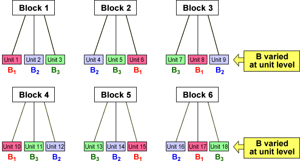

Factors varied at different levels
This section again involves experimental units that are grouped into blocks. We have already described two type of experiment that can be conducted on such experimental units:
We now consider experiments in which different factors are varied at different levels:
When factors are varied at different levels, the blocks are often called full plots and the experimental units are sub-plots. (This terminology arose because the design is commonly used in agricultural experiments involving fields or other plots of land that are split into smaller units for the experiment.)
The three situations are described in the following diagram.

A few situations where split plot experiments are used are described below.
Agricultural experiments
In a crop yield experiment, some factors such as irrigation can only be applied to relatively large areas whereas others such as crop variety and fertiliser can be varied in much smaller plots.
Animal experiments
Animals are often kept in groups such as herds of cows or cages of mice. Some factors can only be varied for complete groups (such as rotation of herds of cattle between paddocks) whereas other factors can be varied at the level of individual animals (such as injections).
Industrial experiments
Split plot designs also arise in industrial experiments. For example, an experiment studying water resistance of wood may examine the effect of pretreatment of the wood and different stains. Since it is difficult to apply the pretreatment to small wood panels, the pretreatment is applied to whole boards that are then cut into smaller panels. The different stains are applied to the small panels.